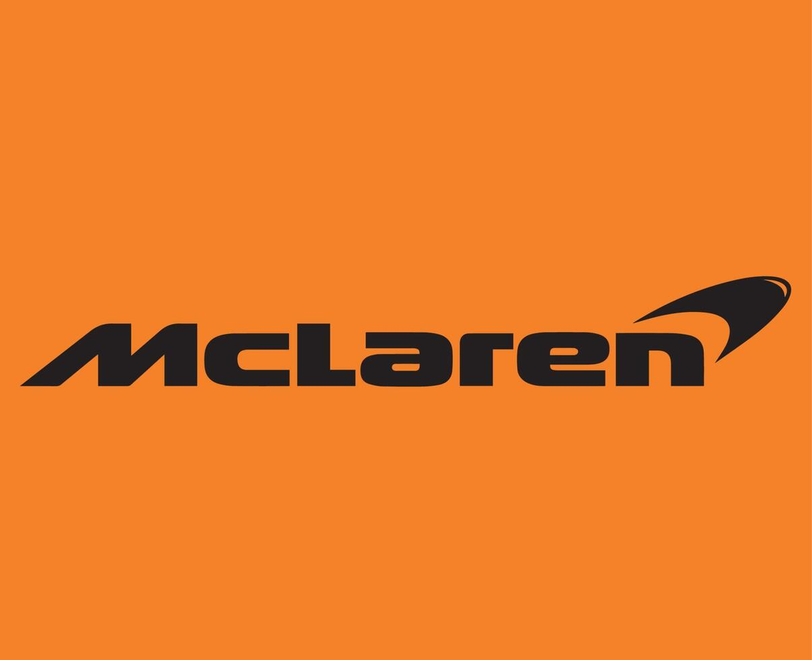

McLaren
A McLaren é uma das equipes mais tradicionais da Fórmula 1. A equipe britânica foi fundada por Bruce McLaren e estreou na categoria em 1966. Em 2026, seus pilotos são Lando Norris e Oscar Piastri.
A equipe possui uma longa história de sucesso e diversos títulos mundiais de pilotos e construtores.
